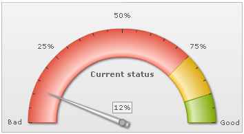
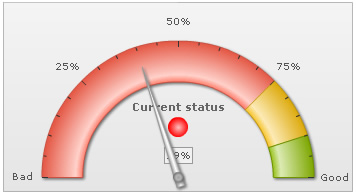
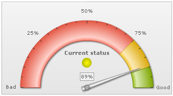
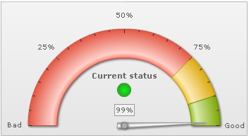

Annotations > Setting visibility |
For each <annotationGroup>, you can define its initial visibility using <annotationGroup id='GRP1' visible='0' ...> This allows the annotation group to be hidden initially. Later, you can show/hide the group using:
|
| Example using Alert Manager |
Let's consider an example where we're plotting a real-time chart. Now, based on the last value received, we need to show a visual status indicator. To create the visual indicator, we defined three annotation groups each containing one of these sphere:
All these spheres are different in different annotation groups, but at the same x and y position. We also specify the annotation group IDs as GRPRED, GRPYELLOW, GRPGREEN. We hide all the groups by setting visible='0'. Now, we actitvate the alert manager for the chart to show the required group, as and when the value enters that zone. Shown below is the XML document for the chart: |
<chart lowerLimit='0' upperLimit='100' lowerLimitDisplay='Bad' upperLimitDisplay='Good' gaugeStartAngle='180' gaugeEndAngle='0' palette='1' numberSuffix='%' tickValueDistance='20' showValue='1' decimals='0' dataStreamURL='CPUData.asp' refreshInterval='3'> |
As you can see above, here we've defined the three annotation groups (each containing a colored sphere) with visible='0'. Thereafter, we've defined the alert manager to show each of the annotation group, based on the last value received. When run against an angular gauge, you'll see the following chart when initialized (note that no sphere annotation groups are initially visible): |
|  |
| And when real-time data is received and validated against alert manager, you'll be able to see the annotations, as shown below: |
|  |
|  |
|  |